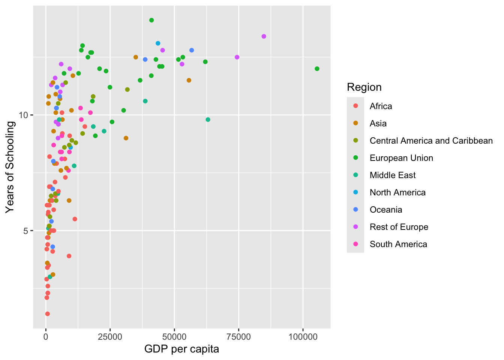
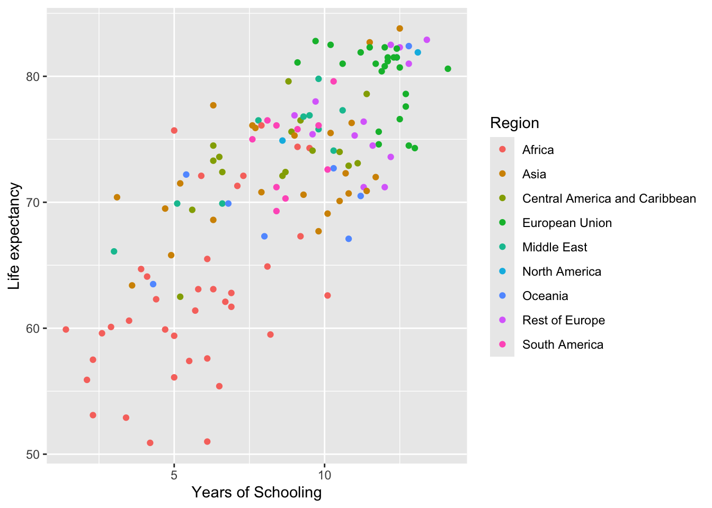
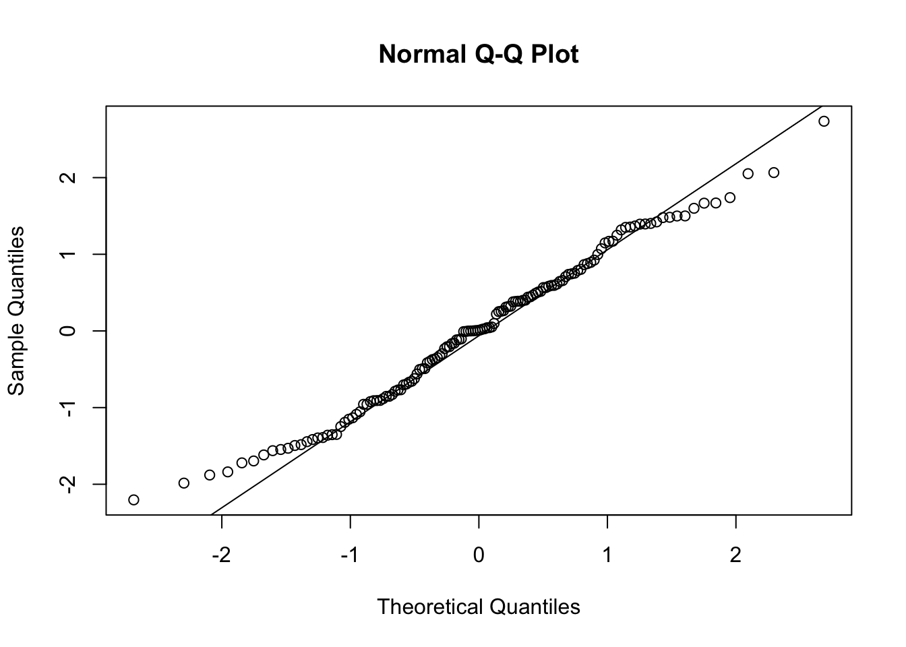
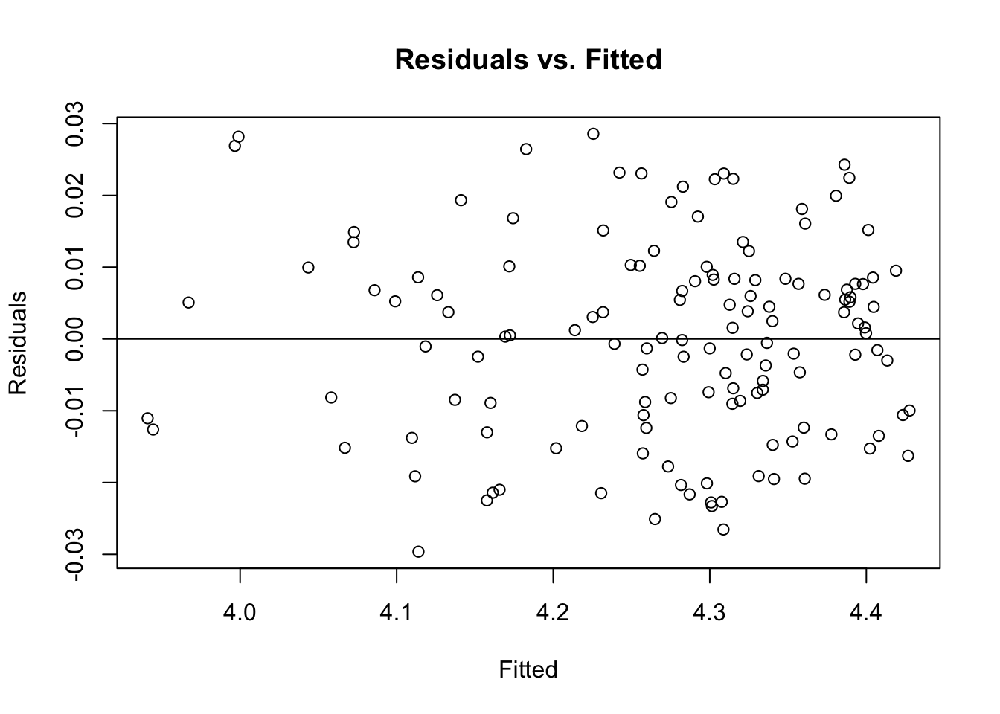
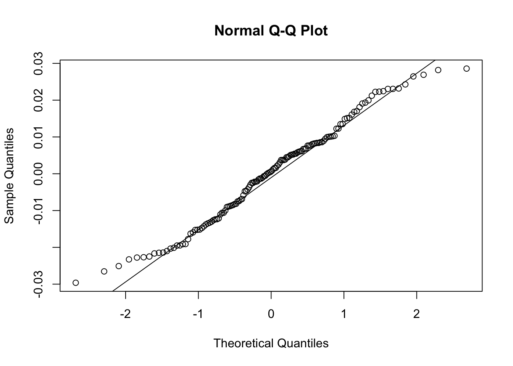
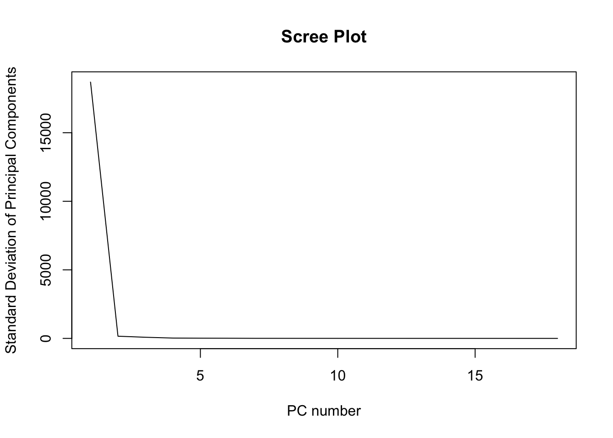
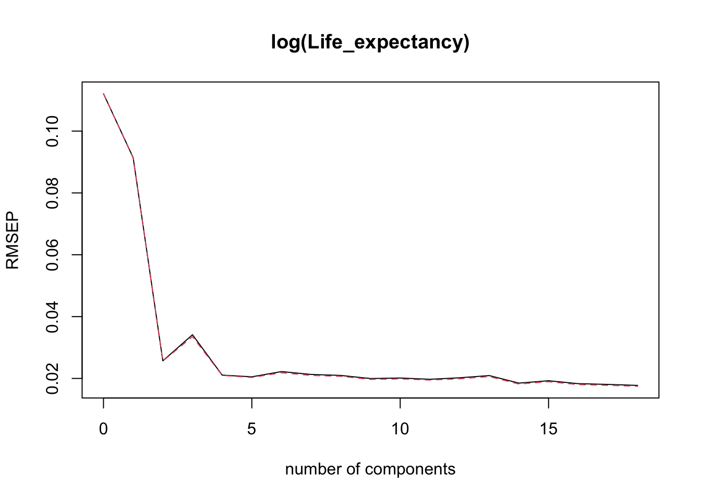
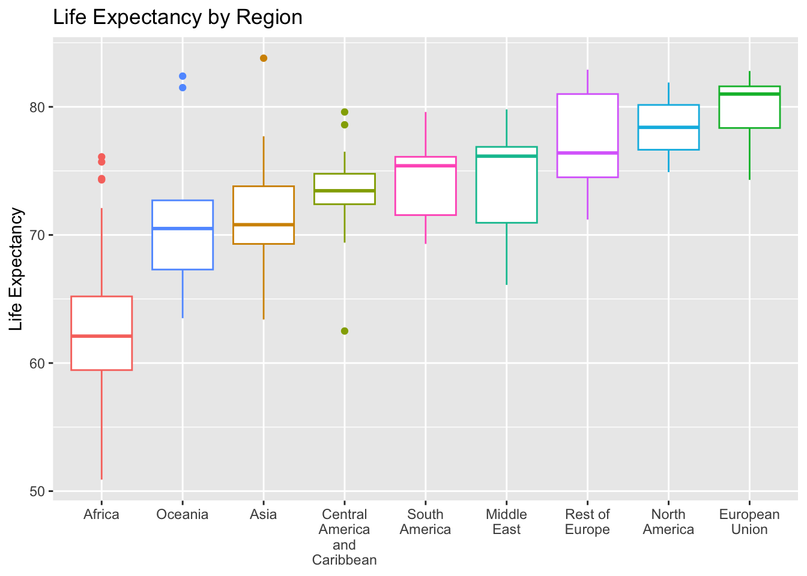
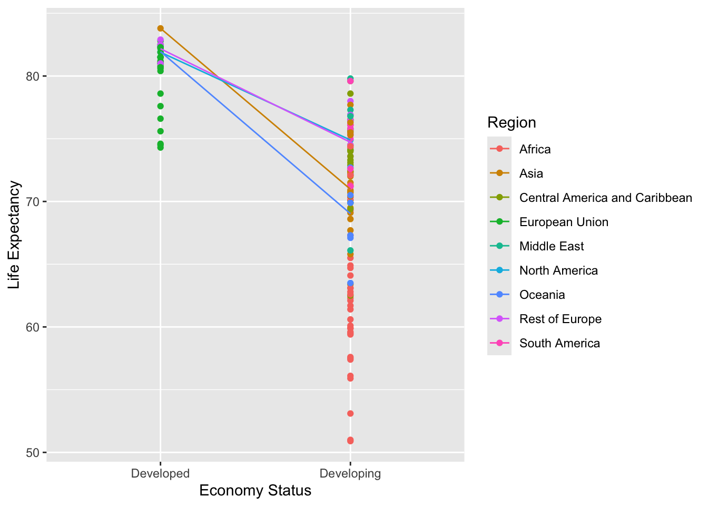
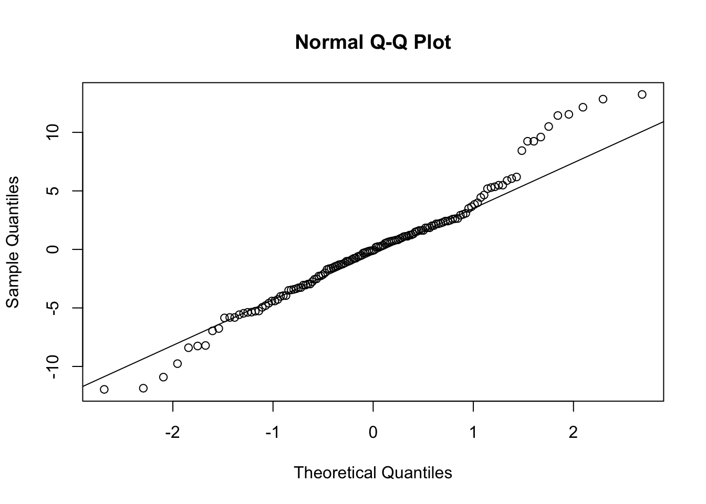

Variable | Description |
|---|---|
Country | List of the 179 countries |
Region | 179 countries are distributed in 9 regions. E.g. Africa, Asia, Oceania, European Union, Rest of Europe and etc. |
Year | Years observed from 2000 to 2015 |
Infant_deaths | Infant deaths per 1000 population |
Under_five_deaths | Deaths of children under five years old per 1000 population |
Adult_mortality | Deaths of adults per 1000 population |
Alcohol_consumption | Alcohol consumption, recorded in liters of pure alcohol per capita (15+ years old) |
Hepatitis_B | Percent coverage of Hepatitis B (HepB3) immunization among 1-year-olds. |
Measles | Percent coverage of Measles containing vaccine first dose (MCV1) immunization among 1-year-olds |
BMI | A measure of nutritional status in adults, defined as a person’s weight in kilograms divided by the square of that person’s height in meters (kg/m2) |
Polio | Percent coverage of Polio (Pol3) immunization among 1-year-olds. |
Diphtheria | Percent coverage of Diphtheria tetanus toxoid and pertussis (DTP3) immunization among 1-year-olds. |
Incidents_HIV | Incidence of HIV, measured in cases per 1000 population aged 15-49 |
GDP_per_capita | GDP per capita in current United States Dollars (USD) |
Population_mln | Total population in millions |
Thinness_ten_nineteen_years | Prevalence of thinness among adolescents aged 10-19 years. BMI < -2 standard deviations below the median. |
Thinness_five_nine_years | Prevalence of thinness among children aged 5-9 years. BMI < -2 standard deviations below the median. |
Schooling | Average years that people aged 25+ spent in formal education |
Economy_status_Developed | Binary variable. 0=Developing country, 1=Developed country. |
Economy_status_Developing | Binary variable. 0=Developed country, 1=Developing country. |
Life_expectancy | Average life expectancy of both genders in the given year |
Prediction of Life Expectancy and its Relationship to GDP
Introduction
GDP per capita is a measurement of the share of GDP per person, which is calculated by summing the consumption, investments, and exports of a country, subtracting the imports, and dividing this value by the population of that country. GDP is a strong economic estimate of the wealth and living standards of a country, but is not enough to describe the income distribution of a country and individual economic reality. As such, we are curious if GDP per capita is a good indicator of the health of a country, as measured by life expectancy, or if GDP per capita falls short in describing country health. To answer this question, we will build a linear regression model with life expectancy as the response variables and all other eligible variables as predictors.
On a secondary level, we are interested in creating an optimal tool for predicting life expectancy, without regard for the explanatory power of each predictor variable. To consider all possibilities in building this tool, we will include different shrinkage methods. Principal component regression, partial least squares regression, and ridge regression will be employed and evaluated via the root mean squared error, as will more standard models. The limitations of all models will be discussed alongside their benefits.
Data Set
We have obtained an updated version of the World Health Organization’s (WHO) data from 2000-2015 on the life expectancy, health, immunization, and economic and demographic information of 179 different countries. The updated version of the data resolved missing data issues and includes additional columns about income. This data is sourced from Gochiashvili (2023) on Kaggle (https://www.kaggle.com/datasets/lashagoch/life-expectancy-who-updated).
Here we include a description of the variables in the dataset.
Analysis
Exploratory Analysis
To better understand our data, we began with an exploratory analysis. We first observe that the dataset is a time series. Thus, to avoid possible autocorrelations of variables, we have limited our observations for analysis to the year 2015. This year has 179 observations, each corresponding to a different country. To test the predictive capability within the same year, we have reserved 20% of the data (every 5th observation) for use as a test dataset, while the remaining observations will be used to train the models.
We first plotted the raw relationship between GDP per capita and life expectancy in 2015. Though we removed 20% of the data to use as test cases, the overall shape of the data does not change. In this plot, we observe a positive relationship between GDP per capita and Life Expectancy, and this relationship appears non-linear. Most likely, it is logarithmic. We will test the assumptions on an ordinary least squares regression and inform our analysis from there.
Furthermore, we have colored each datapoint by region to show general geographical trends, which reflect the histories of different regions, including how wars and exploitation of regions in the Global South have impacted economies. Most interesting about this spread is that we see high levels of within-group variation. For example, the datapoints for Africa have near 0 GDP per capita, but their life expectancies range across the vertical axis. Conversely, the datapoints for the European Union have life expectancies near 80, but GDP per capita that range across the horizontal axis. We will analyze this phenomenon further using Analysis of Variance (ANOVA) in a later section.

Following this initial graph, we would like to see other relationships between variables in the dataset. We look at a years of schooling vs. GDP per capita plot to understand if other similar relationships exist between GDP per capita and status metrics.

We see a similar nonlinear (likely logarithmic) trend in the plot of years of schooling against GDP per capita. This plot also contains the same within-group variation phenomenon as above. Thus, we expect that there is likely a linear relationship between life expectancy and years of schooling. We observe this relationship below.

We do see a linear relationship, with a low signal-to-noise. Thus, while a model predicting life expectancy with only GDP per capita would likely require a transformation of the response, a model predicting life expectancy with only years of schooling would likely not need such a transformation.
To finish our exploratory data analysis, we note that there is a high likelihood of collinearity between predictor variables in this dataset. For example, the predictors related to rates of immunization coverage are likely collinear due to the fact that several immunizations may given to a child in one sitting. We investigate one such possible collinearity in the plots below, which show every possible combination of the four vaccine coverage variables (percent coverage of Hepatitis B vaccination, percent coverage of Measles vaccination, percent coverage of Polio vaccination, percent coverage of Diphtheria vaccination)

While some plots have a clearer linear relationship than others, and there is definitely a ceiling effect occurring, there seems to be some degree of linearity present between each pair of immunizations. We will investigate collinearity more rigorously in a later section.
Preliminary Models
We begin our data analysis with a multiple linear regression model. We use all possible predictors to model life expectancy, and fit the model using the ordinary method of least squares. For conciseness, we will refer to this model as the Full OLS model. Below is displayed a summary of the Full OLS model.
Call:
lm(formula = Life_expectancy ~ Region + Infant_deaths + Under_five_deaths +
Adult_mortality + Alcohol_consumption + Hepatitis_B + Measles +
BMI + Polio + Diphtheria + Incidents_HIV + GDP_per_capita +
Population_mln + Thinness_ten_nineteen_years + Thinness_five_nine_years +
Schooling + Economy_status_Developing, data = train_lifeexp)
Residuals:
Min 1Q Median 3Q Max
-2.3525 -0.8608 0.0120 0.7495 3.2817
Coefficients:
Estimate Std. Error t value Pr(>|t|)
(Intercept) 8.696e+01 2.702e+00 32.189 < 2e-16 ***
RegionAsia 2.434e-01 4.780e-01 0.509 0.61165
RegionCentral America and Caribbean 1.451e+00 5.163e-01 2.809 0.00581 **
RegionEuropean Union -7.813e-01 7.436e-01 -1.051 0.29554
RegionMiddle East 4.371e-01 5.918e-01 0.739 0.46161
RegionNorth America 1.701e-01 1.132e+00 0.150 0.88085
RegionOceania -1.322e+00 6.436e-01 -2.054 0.04213 *
RegionRest of Europe 2.680e-01 5.926e-01 0.452 0.65195
RegionSouth America 1.810e+00 5.747e-01 3.149 0.00207 **
Infant_deaths -6.433e-02 4.785e-02 -1.344 0.18135
Under_five_deaths -4.827e-02 3.123e-02 -1.546 0.12486
Adult_mortality -4.791e-02 3.286e-03 -14.581 < 2e-16 ***
Alcohol_consumption -2.773e-02 5.413e-02 -0.512 0.60942
Hepatitis_B -1.463e-02 2.710e-02 -0.540 0.59039
Measles 9.839e-03 9.000e-03 1.093 0.27651
BMI -1.195e-01 9.229e-02 -1.295 0.19789
Polio 3.358e-03 2.556e-02 0.131 0.89570
Diphtheria 1.380e-02 3.092e-02 0.446 0.65625
Incidents_HIV 2.013e-01 9.216e-02 2.184 0.03093 *
GDP_per_capita 2.619e-05 9.277e-06 2.824 0.00557 **
Population_mln -3.914e-05 7.186e-04 -0.054 0.95666
Thinness_ten_nineteen_years -2.794e-01 1.571e-01 -1.779 0.07785 .
Thinness_five_nine_years 2.392e-01 1.568e-01 1.525 0.12990
Schooling -4.204e-02 8.480e-02 -0.496 0.62104
Economy_status_Developing -3.129e+00 7.253e-01 -4.314 3.33e-05 ***
---
Signif. codes: 0 '***' 0.001 '**' 0.01 '*' 0.05 '.' 0.1 ' ' 1
Residual standard error: 1.225 on 119 degrees of freedom
Multiple R-squared: 0.9798, Adjusted R-squared: 0.9758
F-statistic: 240.8 on 24 and 119 DF, p-value: < 2.2e-16There are a few key takeaways from this summary. First, the standard errors are very small, with the largest being 2.702 (associated with the (Intercept) term). This indicates that the fitted linear relationship is a very good approximation of the actual relationship between the datapoints, which is corroborated by the very high value of \(R^2=0.9798\). However, this excellent fit is accompanied by only a few significant predictors: RegionCentral America and Caribbean, RegionOceania, RegionSouth America, Adult_mortality, Incidents_HIV, GDP_per_capita, and Economy_status_Developing (out of 24 total predictors). This is a definite symptom of collinearity. We will address collinearity more fully in a later section.
In regards to the first goal of this analysis, we see that, while GDP per capita is a significant predictor of life expectancy, it is not the only significant predictor. We thus compare the above model to the simple linear regression model with life expectancy as the response and GDP per capita as the sole predictor. First, let us observe a summary of the simple linear regression model.
Call:
lm(formula = Life_expectancy ~ GDP_per_capita, data = train_lifeexp)
Residuals:
Min 1Q Median 3Q Max
-17.585 -3.296 1.542 4.465 8.672
Coefficients:
Estimate Std. Error t value Pr(>|t|)
(Intercept) 6.828e+01 6.355e-01 107.445 <2e-16 ***
GDP_per_capita 2.648e-04 2.743e-05 9.653 <2e-16 ***
---
Signif. codes: 0 '***' 0.001 '**' 0.01 '*' 0.05 '.' 0.1 ' ' 1
Residual standard error: 6.133 on 142 degrees of freedom
Multiple R-squared: 0.3962, Adjusted R-squared: 0.3919
F-statistic: 93.18 on 1 and 142 DF, p-value: < 2.2e-16While the standard errors are still small and the predictor significant, the \(R^2\) value has decreased greatly to 0.3962. Since the predictor of the simple linear regression (SLR) model is a subset of predictors of the Full OLS model, we may use the nested model hypothesis test to evaluate the significance of the difference between the two models. The nested model hypothesis test for our current models is as follows: \[\begin{cases} H_0:& \textrm{the SLR and Full OLS models have equivalent levels of accuracy} \\ H_a:& \textrm{the larger Full OLS model is more accurate than the SLR model} \end{cases}\]
| Res.Df | RSS | Df | Sum of Sq | F | Pr(>F) |
|---|---|---|---|---|---|
| 119 | 178 | ||||
| 142 | 5.34e+03 | -23 | -5.16e+03 | 150 | 9.82e-77 |
Since the \(p\)-value is less than 0.05, we reject the null hypothesis. Therefore, without any transformation or other considerations like model diagnostics, the Full OLS model is less accurate than the SLR model.
Model Diagnostics
An important consideration in building linear regression models using ordinary least squares is the adherence of the model to certain assumptions. In particular, one must assure that the residuals (the distance between the fitted values and actual datapoints) have constant variance — also called homoskedasticity — and that the distribution of the residuals is normal. To evaluate these assumptions, we have written a function, diagnostics(), which takes a linear model as input and returns two plots and two tests to assess the assumptions. The first plot, fitted vs. residuals, gives a visual representation of the variance of the residuals, which can be used to understand if the variance is constant. We include the line \(y=0\), towards which the residuals are minimized, to observe if they are evenly and randomly distributed on either side of the line. This plot corresponds with the output of the non-constant variance test. The second plot, the Normal Q-Q plot, displays the sample vs. theoretical quantiles of the residuals. If these quantiles are equal, then the residuals will be perfectly normal; thus, in this plot, we look for adherence to the line \(y=x\). This plot corresponds with the output of the Shapiro-Wilks test of normality.
Below we see the output of the diagnostics() function for the Full OLS model.


Non-constant Variance Score Test
Variance formula: ~ fitted.values
Chisquare = 4.692216, Df = 1, p = 0.0303
Shapiro-Wilk normality test
data: resid(lm)
W = 0.98961, p-value = 0.3632The Full OLS model breaks the homoskedasticity assumption. This can be seen in the leftmost tail of the residuals vs. fitted plot above: on the interval of fitted values [50, 57], nearly all of the residuals are positive, so even though the rest of the plot seems randomly distributed across positive and negative, the overall variance cannot be constant. We confirm this result by the \(p\)-value of the non-constant variance test, \(p=0.0303<0.05\), which allows us to reject the null hypothesis of homoskedasticity.
Since the variance is non-constant, the residuals cannot be truly normally distributed. However, the Q-Q plot above shows a good adherence to the line and the Shapiro-Wilks test returns a \(p\)-value of \(p=0.3632>0.05\), meaning we fail to reject the null hypothesis of normality. Thus, though the residuals are heteroskedastic, we may view them as approximately normally distributed.
We can also view the diagnostic output for the SLR model.


Non-constant Variance Score Test
Variance formula: ~ fitted.values
Chisquare = 1.433745, Df = 1, p = 0.23115
Shapiro-Wilk normality test
data: resid(lm)
W = 0.9175, p-value = 2.36e-07The most egregious violation of the assumptions above is the violation of normality. With \(p=2.36e-07\) in the Shapiro-Wilks test, we can soundly reject the null hypothesis of normality, corroborated visually by the non-equivalence of the quantiles in the Q-Q plot.
If normality is assumed, however, the variance is constant: there is an equivalent proportion of negative and positive residuals. The nonconstant variance test \(p\)-value, \(p=0.23115\), agrees with this statement. However, since the residuals are clearly not randomly distributed, homoskedasticity is a bit of a moot point.
Thus, in terms of assumptions, the Full OLS model once again trumps the SLR model. In the following sections, further models will be built to attempt to resolve the Full OLS model’s violation of assumptions.
Influential Points
In order to apply transformations to the response variable, assess collinearity, and later on run shrinkage methods, one should first analyze the presence and location of influential points in the dataset. Influential points can drastically change the fit of a model. Box-Cox transformations and shrinkage methods are sensitive to influential points, and thus their removal can give a more accurate treatment of the data.
Similarly to the above section, we wrote a function, unusual_obs(), which will identify all points of high leverage, outlier points, and influential points. A point with high leverage is defined as one whose leverage is twice the mean leverage in a given dataset. In turn, leverage is given as the diagonals of the hat matrix \(H=X(X^TX)^{-1}X^T\). Points with high leverage may potentially have a big impact on the fit of the model, but only if they are outliers as well. Outliers are points that do not fit the model well. To find outliers, we locate all datapoints whose standardized residuals are greater than 2 or less than \(-2\). Finally, we find the influential points by calculating the Cook’s distance of each point identified as either a point of high leverage or an outlier. If the Cook’s distance \(D_i\) of any of these points is greater than \(\frac{4}{n}\) (\(n\) being the sample size), then we heuristically consider those points influential.
Below we identify the outliers for the Full OLS model.
[1] "Large Leverage"
9 15 23 25 31 33 37 68
0.5297997 0.3730873 0.3950965 0.6157479 0.6516889 0.6157479 0.6404849 0.4419994
106 128
0.3872335 0.9594019
[1] "Outliers"
9 14 46 53 107
-2.513456 -2.032598 3.073952 2.291787 2.029910
[1] "Influential Points"
9 15 23 25 31 33 37 68 106 128
TRUE FALSE FALSE FALSE TRUE FALSE FALSE FALSE FALSE TRUE
9 14 46 53 107
TRUE FALSE TRUE TRUE TRUE Thus, we have influential points at observations 9, 31, 128 (which have high leverage), and 46, 53, 107 (which are outliers). Let’s see which points these are.
Country | Region | Life_expectancy | GDP_per_capita |
|---|---|---|---|
Eswatini | Africa | 55.4 | 3680 |
China | Asia | 75.9 | 8016 |
Philippines | Asia | 70.6 | 3001 |
Sierra Leone | Africa | 52.9 | 588 |
Thailand | Asia | 76.1 | 5840 |
Singapore | Asia | 82.7 | 55647 |
We see that all of the influential points are in Africa and Asia. To compare these to their regions in particular, and to account for possible socioeconomic factors, we observe the regional mean and standard deviation for GDP per capita in Asia and Africa in 2015.
Region | Mean | Standard.Dev |
|---|---|---|
Asia | 7832.185 | 12684.597 |
Africa | 2704.980 | 3182.277 |
Almost all of the outliers are within one standard deviation of the mean GDP per capita of their region, except Singapore. We also note that the mean GDP per capita across all regions in 2015 was $12617.3, while the standard deviation was $17719.61; thus, all outliers except Singapore were also within one standard deviation of the overall mean. Therefore, we arrive at another piece of evidence in support of the claim that GDP per capita is not the most accurate or significant predictor of life expectancy.
Having qualitatively and quantitatively assessed the nature of the outlier datapoints, we now remove them from the training dataset, since shrinkage methods are very particular about outliers. We then refit the Full OLS model without outliers.
Call:
lm(formula = Life_expectancy ~ Region + Infant_deaths + Under_five_deaths +
Adult_mortality + Alcohol_consumption + Hepatitis_B + Measles +
BMI + Polio + Diphtheria + Incidents_HIV + GDP_per_capita +
Population_mln + Thinness_ten_nineteen_years + Thinness_five_nine_years +
Schooling + Economy_status_Developing, data = train_lifeexp_clean)
Residuals:
Min 1Q Median 3Q Max
-2.12070 -0.79788 0.04188 0.68388 2.77214
Coefficients:
Estimate Std. Error t value Pr(>|t|)
(Intercept) 8.864e+01 2.599e+00 34.106 < 2e-16 ***
RegionAsia 2.006e-01 4.626e-01 0.434 0.665444
RegionCentral America and Caribbean 1.403e+00 4.705e-01 2.982 0.003508 **
RegionEuropean Union -1.062e+00 6.840e-01 -1.553 0.123259
RegionMiddle East 4.894e-01 5.422e-01 0.903 0.368619
RegionNorth America -2.740e-01 1.026e+00 -0.267 0.789833
RegionOceania -1.518e+00 5.851e-01 -2.594 0.010755 *
RegionRest of Europe 1.442e-01 5.574e-01 0.259 0.796264
RegionSouth America 1.804e+00 5.257e-01 3.432 0.000838 ***
Infant_deaths -9.166e-02 4.450e-02 -2.060 0.041689 *
Under_five_deaths -4.017e-02 2.880e-02 -1.395 0.165786
Adult_mortality -4.880e-02 2.972e-03 -16.423 < 2e-16 ***
Alcohol_consumption -4.457e-02 5.020e-02 -0.888 0.376519
Hepatitis_B -2.009e-02 2.450e-02 -0.820 0.414035
Measles 1.644e-02 8.427e-03 1.951 0.053552 .
BMI -9.165e-02 8.721e-02 -1.051 0.295550
Polio -1.672e-02 2.382e-02 -0.702 0.484324
Diphtheria 2.657e-02 2.824e-02 0.941 0.348874
Incidents_HIV 4.374e-01 1.088e-01 4.020 0.000105 ***
GDP_per_capita 2.013e-05 8.703e-06 2.313 0.022523 *
Population_mln 1.240e-03 1.013e-03 1.224 0.223483
Thinness_ten_nineteen_years -9.414e-01 6.477e-01 -1.453 0.148890
Thinness_five_nine_years 8.650e-01 6.349e-01 1.362 0.175783
Schooling -1.244e-01 8.209e-02 -1.515 0.132476
Economy_status_Developing -3.593e+00 6.760e-01 -5.316 5.41e-07 ***
---
Signif. codes: 0 '***' 0.001 '**' 0.01 '*' 0.05 '.' 0.1 ' ' 1
Residual standard error: 1.099 on 113 degrees of freedom
Multiple R-squared: 0.983, Adjusted R-squared: 0.9794
F-statistic: 273 on 24 and 113 DF, p-value: < 2.2e-16The issue of collinearity is not resolved, but removing influential points is not a typical fix for such an issue. More important is whether the removal of influential points pushed the residuals towards normality and/or constant variance. We thus retest the assumptions of ordinary least squares using diagnostics().
 diagnostics-1.png)
 diagnostics-2.png)
Non-constant Variance Score Test
Variance formula: ~ fitted.values
Chisquare = 1.930575, Df = 1, p = 0.1647
Shapiro-Wilk normality test
data: resid(lm)
W = 0.9888, p-value = 0.3309We see that the left tail of the Residuals vs. Fitted plot is still largely positive, but that the spread of the rest of the data is more evenly distributed between positive and negative. The non-constant variance test returns a \(p\)-value of \(p=0.1647>0.05\), meaning we fail to reject the null hypothesis of homoskedasticity. The Q-Q plot and Shapiro-Wilk’s test maintain the approximate normality of the residuals from the version of the model that included the influential points. Thus, upon removal of the influential points, the Full OLS model was able to fit all necessary assumptions.
Transformations
The removal of influential points allows us to investigate the necessity for a transformation of the response with greater precision. Thus, since we identified a nonlinear relationship between the response and some of the predictors (most notably GDP per capita) in the exploratory data analysis, we now run the Box-Cox transformation of the response variable. The Box-Cox transformation procedure calculates the log-likelhood of the different values of \(\lambda\) as in the following power transformation: \[g_\lambda (y)=\begin{cases}y^\lambda & \lambda \not= 0 \\ \log{y} & \lambda = 0\end{cases}\]
We use the Full OLS model with no influential points as the basis of this computation, plotting the log-likelihood function of \(\lambda\) and identifying its 95% confidence interval.

First, we note that \(\lambda=1\) is not included in the 95% confidence interval, which tells us that a transformation does need to occur. The 95% confidence interval is not too wide, just over 1 in length, which tells us that there is not a large level of uncertainty in the necessary trasnformation. Finally, the estimated value of \(\lambda\) is very close to 0 — which corresponds to a transformation by taking \(\log{y}\). Thus, we fit and summarize the Box-Cox transformed linear model below, in which the response of life expectancy is replaced by the natural logarithm of life expectancy.
Call:
lm(formula = log(Life_expectancy) ~ Region + Infant_deaths +
Under_five_deaths + Adult_mortality + Alcohol_consumption +
Hepatitis_B + Measles + BMI + Polio + Diphtheria + Incidents_HIV +
GDP_per_capita + Population_mln + Thinness_ten_nineteen_years +
Thinness_five_nine_years + Schooling + Economy_status_Developing,
data = train_lifeexp_clean)
Residuals:
Min 1Q Median 3Q Max
-0.0307761 -0.0087394 -0.0003242 0.0087046 0.0309040
Coefficients:
Estimate Std. Error t value Pr(>|t|)
(Intercept) 4.514e+00 3.449e-02 130.863 < 2e-16 ***
RegionAsia 1.429e-03 6.140e-03 0.233 0.81634
RegionCentral America and Caribbean 1.684e-02 6.244e-03 2.696 0.00808 **
RegionEuropean Union -1.713e-02 9.078e-03 -1.887 0.06179 .
RegionMiddle East 5.096e-03 7.195e-03 0.708 0.48025
RegionNorth America -6.391e-03 1.361e-02 -0.469 0.63962
RegionOceania -2.284e-02 7.765e-03 -2.941 0.00397 **
RegionRest of Europe -1.710e-03 7.397e-03 -0.231 0.81756
RegionSouth America 2.170e-02 6.977e-03 3.110 0.00237 **
Infant_deaths -8.061e-04 5.905e-04 -1.365 0.17492
Under_five_deaths -1.102e-03 3.822e-04 -2.883 0.00471 **
Adult_mortality -7.090e-04 3.944e-05 -17.977 < 2e-16 ***
Alcohol_consumption -1.422e-04 6.662e-04 -0.213 0.83139
Hepatitis_B -2.868e-04 3.251e-04 -0.882 0.37960
Measles 1.515e-04 1.118e-04 1.354 0.17833
BMI -1.200e-03 1.157e-03 -1.037 0.30194
Polio -2.083e-04 3.162e-04 -0.659 0.51143
Diphtheria 3.481e-04 3.748e-04 0.929 0.35501
Incidents_HIV 4.698e-03 1.444e-03 3.254 0.00150 **
GDP_per_capita 1.662e-07 1.155e-07 1.439 0.15283
Population_mln 1.484e-05 1.345e-05 1.103 0.27229
Thinness_ten_nineteen_years -1.310e-02 8.596e-03 -1.524 0.13035
Thinness_five_nine_years 1.226e-02 8.426e-03 1.455 0.14853
Schooling -1.935e-03 1.089e-03 -1.776 0.07840 .
Economy_status_Developing -4.201e-02 8.971e-03 -4.683 7.93e-06 ***
---
Signif. codes: 0 '***' 0.001 '**' 0.01 '*' 0.05 '.' 0.1 ' ' 1
Residual standard error: 0.01459 on 113 degrees of freedom
Multiple R-squared: 0.9859, Adjusted R-squared: 0.9829
F-statistic: 329.7 on 24 and 113 DF, p-value: < 2.2e-16We see similar strengths and weaknesses between this model and the Full OLS model: high \(R^2\) and low standard error indicating that the linear model is an accurate fit for the data, but a high \(R^2\) with a low number of significant predictors indicating collinearity. Using the function from the diagnostics section above, we may also see how the Box-Cox transformed model fits the assumptions of ordinary least squares regression.


Non-constant Variance Score Test
Variance formula: ~ fitted.values
Chisquare = 4.242568, Df = 1, p = 0.039422
Shapiro-Wilk normality test
data: resid(lm)
W = 0.99165, p-value = 0.5892In the Residuals vs. Fitted plot above, we see a much wider dispersion of residuals in the lefthand side of the data than in the righthand side. This results in a non-constant variance test \(p\)-value of \(p=0.039422<0.05\), meaning we reject the null hypothesis of homoskedasticity. The normality assumption is met by both the Q-Q plot and the Shapiro-Wilks test of normality. Thus, the Box-Cox transformation returns the model to meeting only one of the assumptions (normality) while failing to meet the other (homoskedasticity).
Collinearity
One of the recurring issues with the various models presented in this report thus far has been a presence of collinearity, which we have identified from the combination of high \(R^2\) and low number of significant predictors. In this section, we will use several strategies to more formally assess collinearity in the previous models.
To begin, we wrote a function (cond_nums()) which calculates and displays the eigenvalues and condition numbers of the matrix \(X^TX\) (where \(X\) is the matrix of observations of predictor variables). The condition numbers \(\kappa_i=\sqrt{\frac{\lambda_i}{\lambda_p}}\) (where \(\lambda_p\) is the smallest eigenvalue) give an indication of the amount of collinearity between predictor variables. A condition number is considered large if \(\kappa_i\geq 30\).
We first find the condition numbers for the Full OLS model with no influential points below. We have chosen to evaluate this model in particular since it is our best bet so far for a model that fits assumptions and is a good fit for the data.
Eigenvalue | Condition.Number |
|---|---|
74050849056.4214325 | 1.0000 |
6727341.1288215 | 104.9164 |
1823640.9990563 | 201.5094 |
515134.9368935 | 379.1443 |
40793.0663706 | 1347.3234 |
19464.9809425 | 1950.4644 |
3542.2061105 | 4572.2304 |
2677.7580354 | 5258.7116 |
1532.0493324 | 6952.3023 |
1247.1788626 | 7705.4969 |
846.1002935 | 9355.2220 |
513.2585450 | 12011.4912 |
217.6688155 | 18444.5012 |
122.4282351 | 24593.7201 |
18.4416299 | 63367.3244 |
13.0505677 | 75326.9391 |
10.6055142 | 83560.1393 |
9.7137823 | 87311.3770 |
7.2981564 | 100729.9085 |
5.9133325 | 111904.8405 |
2.2267879 | 182358.3271 |
1.8612311 | 199464.1618 |
1.5082902 | 221575.9252 |
0.7398552 | 316367.3471 |
Unsurprisingly, all of the condition numbers are greater than 30, indicating a high level of collinearity — in particular, this means that collinearity is being caused by many different approximate linear combinations between predictors.
Another measure of collinearity is the Variance Inflation Factor (VIF). Since collinearity leads to unstable estimations of the coefficients \(\beta\), we can observe the effect of collinearity in the expression of the variance of \(\hat\beta\) for a given predictor \(x_j\), \(\textrm{var}(\hat\beta_j)=\sigma^2\left(\frac{1}{1-R^2_j}\right)\frac{1}{\sum_i(x_{ij}-\bar x_j)^2}\). The variance inflation factor is derived from this expression and defined as \((1-R_j^2)^{-1}\) and is large if and only if \(\textrm{var}(\hat\beta_j)\) is large.
We calculate the VIFs of the predictors in the Full OLS model with no influential points below.
GVIF Df GVIF^(1/(2*Df))
Region 100.474932 8 1.333916
Infant_deaths 93.055043 1 9.646504
Under_five_deaths 87.937560 1 9.377503
Adult_mortality 7.899828 1 2.810663
Alcohol_consumption 4.261877 1 2.064431
Hepatitis_B 15.428785 1 3.927949
Measles 2.013224 1 1.418881
BMI 3.614704 1 1.901238
Polio 11.808635 1 3.436369
Diphtheria 21.785879 1 4.667535
Incidents_HIV 2.539843 1 1.593689
GDP_per_capita 2.990740 1 1.729376
Population_mln 1.568307 1 1.252321
Thinness_ten_nineteen_years 820.074088 1 28.636936
Thinness_five_nine_years 806.283567 1 28.395133
Schooling 7.137980 1 2.671700
Economy_status_Developing 9.292191 1 3.048309A VIF of exactly 1 indicates perfectly orthogonal variables; thus, we hope for VIFs not much larger than 1. Here, we see several much larger than 1, including Infant_deaths, Under_five_deaths, Hepatitis_B, Diphtheria, Thinness_ten_nineteen_years, and Thinness_five_nine_years. Qualitatively, these make sense: counts of childhood mortality are likely collinear to each other, rates of vaccine coverage are likely collinear to each other, and measures of thinness are by definition collinear to BMI (since their calculation is based off extreme BMI values).
With the above two assessments, we have identified a continued presence of collinearity in our models. Thus, in the following section, we will use the model selection technique of stepwise elimination to attempt to reduce collinearity.
Model Selection
Model selection techniques are used to optimally select a subset of predictors. The technique we will rely on in this section is stepwise elimination, which evaluates the AIC (Akaike’s Information Criterion) of different models using a sequential search method. We include the summary of the model chosen by stepwise elimination below. The starting model is the Full OLS model with no influential points.
Call:
lm(formula = Life_expectancy ~ Region + Infant_deaths + Under_five_deaths +
Adult_mortality + Measles + Incidents_HIV + GDP_per_capita +
Thinness_ten_nineteen_years + Thinness_five_nine_years +
Schooling + Economy_status_Developing, data = train_lifeexp_clean)
Residuals:
Min 1Q Median 3Q Max
-2.20377 -0.81907 0.00906 0.69463 2.73534
Coefficients:
Estimate Std. Error t value Pr(>|t|)
(Intercept) 8.572e+01 1.235e+00 69.382 < 2e-16 ***
RegionAsia 3.123e-01 4.525e-01 0.690 0.491454
RegionCentral America and Caribbean 1.334e+00 4.338e-01 3.075 0.002608 **
RegionEuropean Union -1.165e+00 6.562e-01 -1.775 0.078453 .
RegionMiddle East 4.969e-01 4.871e-01 1.020 0.309706
RegionNorth America 2.215e-01 8.913e-01 0.248 0.804199
RegionOceania -1.521e+00 5.279e-01 -2.882 0.004685 **
RegionRest of Europe 3.159e-01 5.210e-01 0.606 0.545512
RegionSouth America 1.808e+00 4.957e-01 3.647 0.000394 ***
Infant_deaths -8.324e-02 4.286e-02 -1.942 0.054507 .
Under_five_deaths -4.085e-02 2.764e-02 -1.478 0.142140
Adult_mortality -4.906e-02 2.872e-03 -17.081 < 2e-16 ***
Measles 1.154e-02 7.599e-03 1.519 0.131467
Incidents_HIV 3.989e-01 1.070e-01 3.729 0.000295 ***
GDP_per_capita 2.043e-05 8.613e-06 2.372 0.019309 *
Thinness_ten_nineteen_years -8.910e-01 6.292e-01 -1.416 0.159364
Thinness_five_nine_years 8.518e-01 6.161e-01 1.383 0.169352
Schooling -1.531e-01 7.314e-02 -2.093 0.038473 *
Economy_status_Developing -3.774e+00 6.131e-01 -6.154 1.05e-08 ***
---
Signif. codes: 0 '***' 0.001 '**' 0.01 '*' 0.05 '.' 0.1 ' ' 1
Residual standard error: 1.095 on 119 degrees of freedom
Multiple R-squared: 0.9823, Adjusted R-squared: 0.9796
F-statistic: 366.6 on 18 and 119 DF, p-value: < 2.2e-16On first glance, we see a greater proportion of significant predictors than in the Full OLS model, with an equivalent \(R^2\) and smaller residual standard errors. Thus, this model is an improvement from the OLS model.
We can also observe the effect of stepwise elimination on the collinearity of the model. We generate the condition numbers and VIFs of the predictors in the stepwise elimination model.
Eigenvalue | Condition.Number |
|---|---|
74049520575.4937439 | 1.0000 |
4872096.5251508 | 123.2830 |
177993.3280916 | 644.9993 |
40626.3725865 | 1350.0725 |
3546.2895803 | 4569.5562 |
627.8433933 | 10860.1409 |
412.8954820 | 13391.8649 |
139.8098264 | 23014.0089 |
24.6839036 | 54771.4458 |
14.3741216 | 71774.5484 |
12.4624308 | 77083.2018 |
10.8404974 | 82648.7940 |
9.3478039 | 89003.3451 |
7.8056231 | 97399.6365 |
2.9741046 | 157791.2828 |
2.3905556 | 175999.6075 |
1.6836676 | 209716.6679 |
0.9839026 | 274337.4357 |
GVIF Df GVIF^(1/(2*Df))
Region 31.081302 8 1.239599
Infant_deaths 87.034271 1 9.329216
Under_five_deaths 81.675042 1 9.037425
Adult_mortality 7.437792 1 2.727231
Measles 1.649742 1 1.284423
Incidents_HIV 2.473247 1 1.572656
GDP_per_capita 2.952240 1 1.718209
Thinness_ten_nineteen_years 779.870479 1 27.926161
Thinness_five_nine_years 765.094694 1 27.660345
Schooling 5.709675 1 2.389493
Economy_status_Developing 7.704286 1 2.775660Collinearity seems not to have improved significantly. The condition numbers are once again all greater than 30, and the VIFs that were exceptionally large continue to be so (Infant_deaths, Under_five_deaths, Thinness_ten_nineteen_years, and Thinness_five_nine_years in particular). Thus, the stepwise elimination did not resolve our problem with collinearity.
However, we can combine stepwise elimination with our previous Box-Cox transformation. We display a summary of this model below.
Call:
lm(formula = log(Life_expectancy) ~ Region + Under_five_deaths +
Adult_mortality + Incidents_HIV + GDP_per_capita + Schooling +
Economy_status_Developing, data = train_lifeexp_clean)
Residuals:
Min 1Q Median 3Q Max
-0.0296250 -0.0106049 0.0006479 0.0085137 0.0285783
Coefficients:
Estimate Std. Error t value Pr(>|t|)
(Intercept) 4.474e+00 1.331e-02 336.282 < 2e-16 ***
RegionAsia 1.105e-03 5.204e-03 0.212 0.832130
RegionCentral America and Caribbean 1.735e-02 5.549e-03 3.126 0.002211 **
RegionEuropean Union -1.534e-02 8.449e-03 -1.816 0.071864 .
RegionMiddle East 2.853e-03 6.327e-03 0.451 0.652786
RegionNorth America 2.165e-03 1.159e-02 0.187 0.852171
RegionOceania -2.342e-02 6.481e-03 -3.613 0.000439 ***
RegionRest of Europe 3.368e-03 6.660e-03 0.506 0.613968
RegionSouth America 2.194e-02 6.280e-03 3.493 0.000665 ***
Under_five_deaths -1.556e-03 1.135e-04 -13.713 < 2e-16 ***
Adult_mortality -7.138e-04 3.714e-05 -19.219 < 2e-16 ***
Incidents_HIV 3.933e-03 1.352e-03 2.909 0.004310 **
GDP_per_capita 1.573e-07 1.134e-07 1.387 0.167841
Schooling -1.624e-03 8.670e-04 -1.873 0.063496 .
Economy_status_Developing -4.581e-02 8.048e-03 -5.693 8.67e-08 ***
---
Signif. codes: 0 '***' 0.001 '**' 0.01 '*' 0.05 '.' 0.1 ' ' 1
Residual standard error: 0.01447 on 123 degrees of freedom
Multiple R-squared: 0.9849, Adjusted R-squared: 0.9832
F-statistic: 573.8 on 14 and 123 DF, p-value: < 2.2e-16Again, we see very small residual standard errors, many significant predictors, and a high \(R^2\). Let us check the collinearity.
Eigenvalue | Condition.Number |
|---|---|
74049137028.965195 | 1.0000 |
4351935.852037 | 130.4424 |
40903.279235 | 1345.4914 |
1455.681078 | 7132.2553 |
151.971149 | 22073.9181 |
28.984278 | 50545.0645 |
17.392377 | 65250.0017 |
14.353126 | 71826.8374 |
11.944447 | 78736.6591 |
9.704332 | 87352.8701 |
9.314693 | 89161.1653 |
3.553624 | 144352.4770 |
2.459924 | 173499.8731 |
1.119023 | 257241.2245 |
GVIF Df GVIF^(1/(2*Df))
Region 13.851037 8 1.178535
Under_five_deaths 7.882325 1 2.807548
Adult_mortality 7.119739 1 2.668284
Incidents_HIV 2.263468 1 1.504483
GDP_per_capita 2.929148 1 1.711475
Schooling 4.593577 1 2.143263
Economy_status_Developing 7.599101 1 2.756647The condition numbers are still very large, but the VIFs have decreased notably. Thus, the combination of the absence of influential points, the Box-Cox transformation, and predictors chosen via stepwise elimination allows a reduction in collinearity. This in turn stabilizes the estimates of the coefficients, \(\hat\beta\), allowing for more accurate interpretability of the model.
Alongside collinearity, we can also check diagnostics of both models above.


Non-constant Variance Score Test
Variance formula: ~ fitted.values
Chisquare = 1.32929, Df = 1, p = 0.24893
Shapiro-Wilk normality test
data: resid(lm)
W = 0.98694, p-value = 0.2166

Non-constant Variance Score Test
Variance formula: ~ fitted.values
Chisquare = 2.851855, Df = 1, p = 0.091269
Shapiro-Wilk normality test
data: resid(lm)
W = 0.98247, p-value = 0.07385We see that both stepwise-elimination-chosen models fit the necessary assumptions, as demonstrated by the plots and \(p\)-values greater than 0.05 above. Thus, while not fully eliminating collinearity, the model selection via stepwise elimination did result in the model’s adherence to assumptions.
Shrinkage Methods
To accomplish our secondary goal of model accuracy when faced with new data, we consider different shrinkage methods for linear models.
To begin, we use principal component analysis to construct a regression model. This method is useful for our modelling purposes because of the level of collinearity between predictors. Principal component analysis/regression builds a model based on principal components, which are representations of the variation in the data. Since principal components are orthogonal, collinearity is resolved.
We begin by generating the principal components from the training dataset. The standard deviation of each component is listed below.
[1] 18694.096 159.949 82.629 24.598 15.799 11.650 4.836
[8] 4.230 3.128 3.062 1.973 1.500 1.284 1.254
[15] 1.107 0.470 0.300 0.000We see a steep dropoff in magnitude of the first and second components’ standard deviations (the first component’s standard deviation is 116.8754 times the second’s). The drop between the second and third standard deviations is much less sizeable (the second is less than twice the third). In comparison, the remaining components account for a miniscule amount of all variation present in the training dataset. We can view this as well in the Scree Plot below, which plots the standard deviation of the principal components against their component number.

From the Scree Plot and the standard deviations themselves, we believe a cutoff of 2 components is sufficient for our model. We thus build a principal component regression (PCR) model, a summary of which is displayed below.
Data: X dimension: 138 24
Y dimension: 138 1
Fit method: svdpc
Number of components considered: 2
TRAINING: % variance explained
1 comps 2 comps
X 99.99 100.00
log(Life_expectancy) 36.20 36.52As expected, we see that 100% of the variance of all predictors is explained with only two components.
We also consider partial least squares (PLS) regression. While PCR produces linear combinations of predictors that minimize collinearity by tending towards orthogonality, it does not consider the response variable in its construction of linear combinations. Partial least squares does. Thus, we build a model with all predictors, and include the Box-Cox transformation, which has been shown to have improved fit in previous sections.

The above plot displays the number of components included in the partial least squares regression against their respective cross-validated error (in root mean squared error). We once again see a steep dropoff with the inclusion of only a few components. In particular, the error seems to stabilize and minimize with four components.
Finally, we consider ridge regression. Ridge regression is particularly useful when faced with unstable, collinear coefficients \(\hat\beta\). It works by normalizing the regression coefficients, then minimizing the normalized coefficients. Formally, ridge regression seeks to minimize \(\beta\) in the expression \[(y-X\beta)^T(y-X\beta)+\lambda\sum_j\beta_j^2\] for some \(\lambda\geq 0\). We build the ridge regression model and return the value of \(\lambda\) that minimizes this expression for our specific dataset.
1.40703518
29 We see that a value of \(\lambda\approx 1.4\) minimizes the normalized \(\hat\beta\).
We will compare the efficacy of each model via their root mean squared error in the final section. However, to conclude this section, it is important to mention the limitations of the shrinkage methods described here. In general, they reduce the amount of explanatory power given by a model. Individual coefficients lose their attachment to real-world variables. Thus, while typically powerful prediction techniques, shrinkage methods come at the cost of reduced descriptive capabilities. Additionally, shrinkage methods only work with purely numeric predictors, meaning we have lost the ability to include the categorical variable Region in these models. In the following section, a model will be considered built solely on this categorical variable via one-way ANOVA.
ANOVA
Analysis of Variance (ANOVA) models can be used to quantify relationships between different groups/levels of categorical variables. In particular, they can characterize the proportional size of within-group variation versus between-group variation. They are constructed the same way as linear regression models, with the condition that all predictors must be categorical. In this section, we will begin by visually assessing ANOVA of one or multiple factors, then build the most suitable ANOVA model.
With regards to our dataset, there are two categorical variables of interest: Region (one of 9 geopolitical regions) and Economy_status_developing (binary, 1 = developing country and 0 = developed country). We are interested in whether some level of variation in the response, life expectancy, can be attributed to these variables alone. In other words, we would like to see whether being a citizen of “developed” or “developing” country can predict your life expectancy, and the equivalent for region. We will look both at one-way ANOVA (treating each variable in isolation) and two-way ANOVA (allowing for interactions of the two variables).
To start, let us visualize the between-group variation with box plots. Below we observe the box-and-whisker plot of life expectancy grouped by region.

While some regions seem to have notable differences in life expectancy (e.g. the jump from Africa to Oceania, or from Oceania to European Union), most immediate jumps between groups seem similar. Nevertheless, there could be some meaningful relationship between the variable’s possible values. Let us now observe life expectancy grouped by country’s economic status.

We see what could be a meaningful difference between the two groups. However, the large variance of the “developing” group compared to the “developed” group is troubling for modelling purposes.
Now, let us consider visual plots displaying the interaction between region and economic status.


In both plots, we see an issue that would affect the two-way ANOVA. In the first plot, it is clear that there is not representation of both economy statuses in each region, so a full analysis of the interaction between the variables would be impossible. This pattern carries to the second plot. Thus, we will not build a two-way ANOVA model.
Of the two one-way ANOVA models, the model predicting by region seems more promising. Thus, we provide a summary of that model below.
Call:
lm(formula = Life_expectancy ~ Region, data = train_lifeexp_clean)
Residuals:
Min 1Q Median 3Q Max
-11.9600 -3.0275 -0.0863 2.2350 13.2400
Coefficients:
Estimate Std. Error t value Pr(>|t|)
(Intercept) 62.8600 0.8282 75.903 < 2e-16 ***
RegionAsia 8.7926 1.3962 6.298 4.37e-09 ***
RegionCentral America and Caribbean 10.5525 1.4786 7.137 6.16e-11 ***
RegionEuropean Union 17.0192 1.2985 13.107 < 2e-16 ***
RegionMiddle East 11.4500 1.7568 6.518 1.46e-09 ***
RegionNorth America 15.5400 3.5621 4.363 2.61e-05 ***
RegionOceania 9.0400 1.8311 4.937 2.41e-06 ***
RegionRest of Europe 14.1554 1.5913 8.895 4.48e-15 ***
RegionSouth America 11.3900 1.7568 6.483 1.74e-09 ***
---
Signif. codes: 0 '***' 0.001 '**' 0.01 '*' 0.05 '.' 0.1 ' ' 1
Residual standard error: 4.899 on 129 degrees of freedom
Multiple R-squared: 0.6157, Adjusted R-squared: 0.5918
F-statistic: 25.83 on 8 and 129 DF, p-value: < 2.2e-16We see a model with only significant predictor values, but with a much lower \(R^2\) and much higher residual standard errors than our other models. As a secondary measure of the model’s performance, we test its adherence to assumptions via the diagnostics() function.


Non-constant Variance Score Test
Variance formula: ~ fitted.values
Chisquare = 22.82666, Df = 1, p = 1.7729e-06
Shapiro-Wilk normality test
data: resid(lm)
W = 0.97403, p-value = 0.009775| Df | F value | Pr(>F) |
|---|---|---|
| 8 | 1.94 | 0.059 |
| 129 |
Even accounting for the discrete levels of the model, the variance does not seem constant: in the residuals vs. fitted plot, the residuals for smallest fitted values are much larger than those for the largest fitted values. Similarly, we see large tails tending away from the desired line on the Q-Q plot. The small \(p\)-values on the non-constant variance test and Shapiro-Wilks test of normality could be attributed to the discrete values of the predictor variable. However, we appeal as well to Levene’s test for Homogeneity of Variance, an equivalent to the non-constant variance test built for discrete variables. The small \(p\)-value from this test confirms that this model does not fit the assumptions.
Thus, to conclude this section, we note that the ANOVA model is the second-worst of the models built in this report on all essential fronts. In short, region is not a sufficient predictor (on its own) of life expectancy.
Results and Conclusions
To conclude our report, we return to the two questions we sought to answer at the outset. First, is GDP per capita a good predictor of life expectancy? Second, what is the best model in terms of predictive ability when faced with new data?
To answer the first question, we first recall that the Full OLS model had greater accuracy than the SLR model, as determined by the nested model hypothesis test. However, GDP_per_capita was chosen as one of the predictors by stepwise elimination both before and after Box-Cox transformation. Thus, GDP per capita may be seen as an important predictor of the average life expectancy in a given country, but not as the important predictor.
To answer the second question, we turn to the following subsection.
Results: Evaluating Model Performance
Below is included a table that summarizes the performance of each model built in this paper. We include several measures that paint a picture of the model’s accuracy from several angles. In particular, we include the root mean squared error, defined as \(\sqrt{\sum_{i=1}^n (\hat y_i- y_i)^2/n}\), where \(y_i\) is the observed value of the response \(y\), \(\hat y_i\) is the corresponding fitted value, and \(n\) is the sample size. This is commonly used as a measure of performance for models that do not have associated \(R^2\), adjusted \(R^2\), or residual standard errors, like the shrinkage methods used in this paper.
The columns are as follows: R.Squared corresponds to the multiple \(R^2\) value as given in the summary of the linear model; Adj.R.Squared corresponds to the adjusted \(R^2\) of the model; RSE corresponds to the residual standard error of the model; RMSE.train corresponds to the root mean squared error between the fitted values and the observed values in the training dataset; RMSE.test corresponds to the root mean squared error between the fitted values and the observed values in the testing dataset; and RMSE.ratio is a measure of the difference between the two other RMSE values, calculated by dividing RMSE.test by RMSE.train. The shrinkage methods do not have associated values for some of these performance metrics, and thus no associated value is listed for those models.
Model | R.Squared | Adj.R.Squared | RSE | RMSE.train | RMSE.test | RMSE.ratio |
|---|---|---|---|---|---|---|
Full OLS | 0.980 | 0.976 | 1.225 | 1.113 | 1.505 | 1.352 |
SLR (GDP/cap only) | 0.396 | 0.392 | 6.133 | 6.090 | 6.018 | 0.988 |
Full OLS (no influ. pts.) | 0.983 | 0.979 | 1.099 | 11.056 | 1.990 | 0.180 |
Box-Cox Trans. | 0.986 | 0.983 | 0.015 | 68.108 | 65.722 | 0.965 |
Stepwise Elim. | 0.982 | 0.980 | 1.095 | 11.060 | 1.939 | 0.175 |
Step Elim. & Box-Cox | 0.985 | 0.983 | 0.014 | 68.108 | 65.724 | 0.965 |
PCR | 68.103 | 65.721 | 0.965 | |||
PLS | 68.098 | 65.724 | 0.965 | |||
Ridge Regression | 1.285 | 1.652 | 1.286 | |||
ANOVA | 0.616 | 0.592 | 4.899 | 10.638 | 4.567 | 0.429 |
There are roughly three groups of models analyzed: standard models and their variations, shrinkage models, and the ANOVA model. As explained in the ANOVA section, the ANOVA model is the second-worst of all models, so in terms of picking the best model, we will only consider candidates from the first two groups. For the shrinkage method models, a best model is easy to select: the ridge regression has the smallest RMSE for both training and testing datasets.
However, a best model is more difficult to select from the standard models and their variations. The models with Box-Cox transformation applied maximize \(R^2\) and adjusted \(R^2\), while minimizing residual standard error. However, their RMSE are the largest of all models on both training and testing sets. The stepwise elimination model without the Box-Cox transformation also emerges as a possible best model due to its low residual standard error, high \(R^2\) and adjusted \(R^2\), and low RMSE, especially when faced with new (test) data.
To help select a best of the standard models, we consider whether or not each model meets the assumptions of linear regression. The adherence of each model to the assumptions of homoskedasticity and normality of residuals is summarized in the table below.
Model | Homoskedasticity | Normality |
|---|---|---|
Full OLS | false | true |
SLR (GDP/cap only) | true | false |
Full OLS (no influential points) | true | true |
Box-Cox Transformation | false | true |
Stepwise Elimination | true | true |
Box-Cox & Step. Elim. | true | true |
One-Way ANOVA | false | false |
Only three models meet both assumptions: the Full OLS model with no influential points and both stepwise elimination models. Since the stepwise elimination model without the Box-Cox transformation meets both assumptions and does very good on its performance measures, we choose that model as the best of the non-shrinkage models.
Conclusion
To conclude, we summarize our questions and the answers we were able to discern. Our first question was whether or not GDP per capita has a linear relationship with life expectancy. While there certainly was some form of relationship between the two that could be expressed as linear, life expectancy was better predicted by GDP per capita in conjunction with other predictors. Our second question was which model is best for predicting the response, life expectancy. Our two contenders are the ridge regression model and the stepwise elimination model (with transformation of the response selected via Box-Cox). Which model should be considered best mostly rests on the use of the model. If the goal is solely to predict life expectancy, ridge regression is likely best, due to its minimization properties. However, ridge regression loses explanatory power by the normalization of coefficients inherent to the method. Thus, if prediction of life expectancy in conjunction with coefficients that bear some explanatory power over future observational data, the stepwise elimination model is best. With this, we have answered both questions we sought to resolve at the outset of our project.